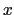

Next: Computational cost of colvars
Up: Selecting atoms for colvars:
Previous: Moving frame of reference.
Contents
Index
Treatment of periodic boundary conditions.
When periodic boundary conditions are defined, the colvars module requires that the coordinates of each molecular fragment are contiguous, without ``jumps'' when a fragment is partially wrapped near a periodic boundary.
The colvars module relies on this assumption when calculating a group's center of geometry, but the condition may fail if the group spans different molecules.
In general, coordinate wrapping does not affect the calculation of colvars if each atom group satisfies one or more of the following:
- i)
- it is composed by only one atom;
- ii)
- it is used by a colvar component which does not make use of its center of geometry, but only of pairwise distances (distanceInv, coordNum, hBond, alpha, dihedralPC);
- iii)
- it is used by a colvar component that ignores the ill-defined Cartesian components of its center of mass (such as the 
and
components of a membrane's center of mass modeled with distanceZ).
If none of these conditions are met, wrapping may affect the calculation of collective variables: a possible solution is to use pbc wrap or pbc unwrap prior to processing a trajectory with the colvars module.
Next: Computational cost of colvars
Up: Selecting atoms for colvars:
Previous: Moving frame of reference.
Contents
Index
vmd@ks.uiuc.edu